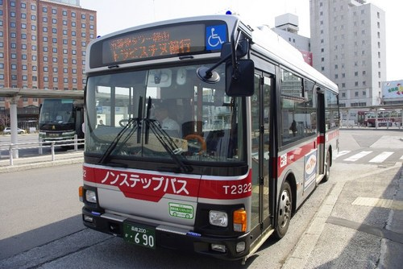

電車をご利用の方
ＪＲ函館本線・函館駅下車
函館KGカントリークラブには直接電車でお越しになることはできないので…
バスをご利用の方
バスをご利用の方は函館駅からの送迎バスをご利用になり………テキストテキストテキストテキストテキストテキストテキストテキストテキストテキストテキストテキストテキストテキストテキストテキストテキストテキストテキストテキストテキストテキストテキストテキストテキストテキストテキストテキストテキストテキストテキストテキストテキストテキスト………説明文
車でお越しの方
国道5号線/函館駅より 15 km
函館駅前から国道５号線を北上。若松町停留所前から高砂通りに入る。中の橋を渡り、市電・梁川町停留所を越え、北海道新聞社の交差点を左折し直進し、産業道路に出て右折、東山墓地入口のクラブ標識を左折し８ｋｍでコース。
産業道路/函館空港より 15 km